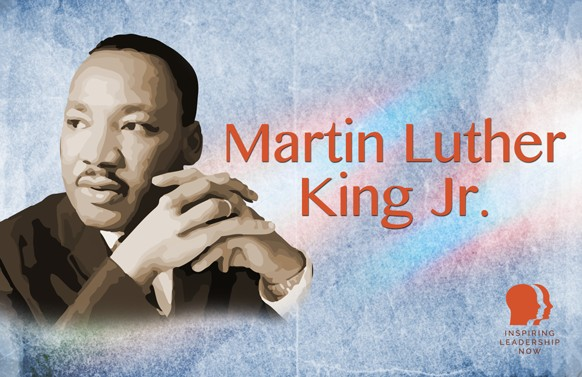

Martin Luther King Jr
Martin Luther King Jr. was a pivotal leader in the Civil Rights Movement, known for his advocacy of non-violent resistance and his role in challenging racial segregation in the United States. Born in 1929 in Atlanta, Georgia, King initially struggled with religion but found his calling in the ministry and activism after attending Morehouse College. His awareness of racial inequality deepened there, and by 1957, he co-founded the Southern Christian Leadership Conference.
Inspired by Mahatma Gandhi, King became a leading figure in peaceful protests, most famously delivering his "I Have a Dream" speech during the 1963 March on Washington. His efforts contributed to the passage of the Civil Rights Act of 1964, and he was awarded the Nobel Peace Prize that same year.
King's activism was tragically cut short when he was assassinated in 1968. Despite his death, his legacy continues to influence the fight for racial equality. Martin Luther King Jr. Day, observed annually on the third Monday in January, honors his profound impact on American society.